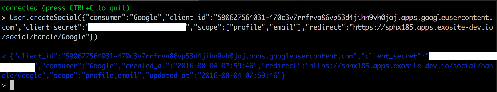
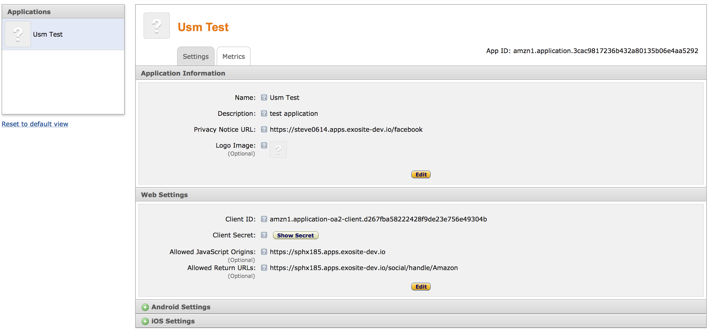
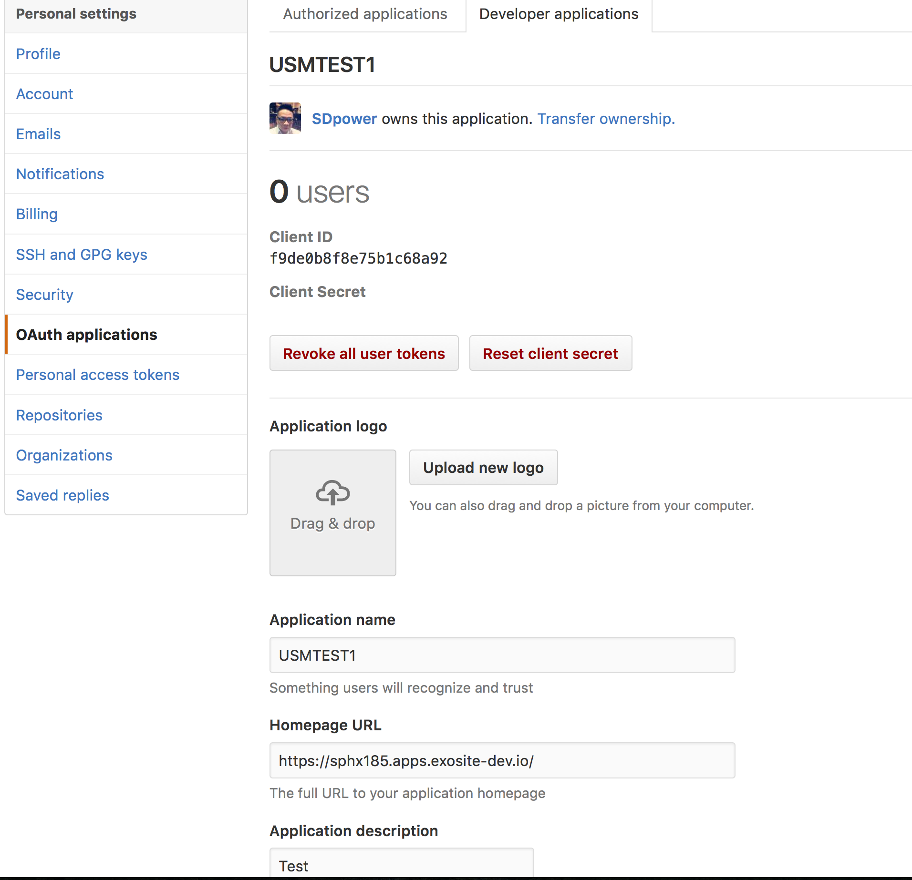
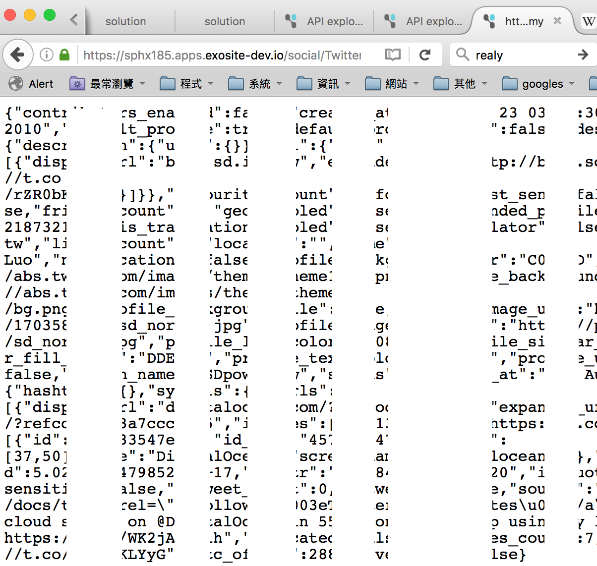

Guide: Murano OAuth User
This document describes how to use the Murano User service to connect with an OAuth provider. This allows the end users of a solution to sign in using an existing identity such as Google or Facebook rather than using username and password.
Function:
createSocial
Description: Create a social. Example:
User.createSocial({"consumer":"Google","client_id":"xxxxxxxxxx","client_secret":"xxxxxx","scope":["profile","email"],"redirect":"https://xxxxx.exosite.io/social/handle/Google"})
getSocial
Description: Get social info. Example:
User.getSocial({consumer="Google”})
deleteSocial
Description: Delete a social. Example:
User.deleteSocial({consumer="Google”})
updateSocial
Description: Update the social info. Example:
User.updateSocial({consumer="Google”,client_id=”213casdsad”})
getSocialLoginUrl
Description: Get social login url. Example:
User.getSociaLoginUrl({consumer="Google”})
getSocialToken
Description: Get social login Token. Example:
User.getSocialToken({consumer="Google”,code=”xxxxx”})
socialRequest
Description: Request social get information. Example:
User.socialRequest({consumer="Google”,token=”xxxxx”})
Example
Endpoints
First create the 2 endpoints on you solution.
--#ENDPOINT GET /social/handle/{consumer}/loginurl
-- This endpoint will redirect you to the social consumer login auth pages
response.headers["location"] = User.getSocialLoginUrl({consumer=request.parameters.consumer})
response.code = 303
--#ENDPOINT GET /social/handle/{consumer}
-- This endpoint is social consumer callback url
-- Get token then request information
results, err = to_json(request.parameters)
resultd, err = from_json(results)
local tokenstr = User.getSocialToken(resultd)
response.message = User.socialRequest({consumer=request.parameters.consumer, token=tokenstr})
Create an App on Google: https://console.developers.google.com/
Go to Credentials and create a new credential. It should be an OAuth client ID with type "Web Application".
Get the
ClientID => Client ID
Client_secret => Client secret
Add callback url.

Use websocket debug endpoint to add the google social connection.
Example: User.createSocial({"consumer":"Google","client_id":"xxxxxxxxxx","client_secret":"xxxxxx","scope":["profile","email"],"redirect":"https://sphx185.apps.exosite-dev.io/social/handle/Google"})

Test it:
Example: https://sphx185.apps.exosite-dev.io/social/handle/Google/loginurl
 

Create an App on Facebook: https://developers.facebook.com/apps/

Get the:
ClientID => App ID
Client_secret => App Secret
Set the callback url.

Use websocket debug endpoint to add the Facebook social.
Example: User.createSocial({"consumer":"Facebook","client_id":"xxxxxxxxxx","client_secret":"xxxxxx","scope":["email","public_profile"],"redirect":"https://sphx185.apps.exosite-dev.io/social/handle/Facebook"})

Test it.
Example: https://sphx185.apps.exosite-dev.io/social/handle/Facebook/loginurl

Success!

Amazon
Go to Amazon doc: http://login.amazon.com/website
Register your website as an Application on the App Console.

Get the:
ClientID => Client ID
Client_secret => Client Secret
Use websocket debug endpoint to add the amazon social.
Example: User.createSocial({"consumer":"Amazon","client_id":"xxxxxxxxxx","client_secret":"xxxxxx","scope":["profile"],"redirect":"https://sphx185.apps.exosite-dev.io/social/handle/Amazon"})
Test it:
Example: https://sphx185.apps.exosite-d
ev.io/social/handle/Amazon/loginurl

Success!

GitHub
Create a new application on Github: https://github.com/settings/applications/new
Get the:
ClientID => Client ID
Client_secret => Client Secret

Use websocket debug endpoint to add the GitHub social.
Example: User.createSocial({"consumer":"GitHub","client_id":"xxxxxxxxxxxx","client_secret":"xxxxxxxxxxxxxxx","scope":["user"],"redirect":"[https://sphx185.apps.exosite-dev.io/social/handle/GitHub](https://sphx185.apps.exosite-dev.io/social/handle/GitHub)"})

Test it:
Example: https://sphx185.apps.exosite-dev.io/social/handle/GitHub/loginurl


Note: Twitter is using OAuth1, not OAuth2, so it is different.
First create the 2 endpoints on your solution.
--#ENDPOINT GET /Twitter/login
-- This endpoint will redirect you to the social consumer login auth pages
local qToken = User.getSocialLoginUrl({consumer="Twitter"})
local url = User.getSocialLoginUrl({consumer="Twitter",reqToken=qToken})
response.headers = {
["location"] = url,
["Set-Cookie"] = "token=" .. qToken .. "; Path=/social/Twitter;"
}
response.code = 303
--#ENDPOINT GET /social/Twitter/handle
-- This endpoint is social consumer callback url
-- Get token then request information
local Headers = request.headers
local Token = string.gsub(Headers["cookie"], "token=(%w+)", "%1")
local params= request.parameters
params.reqToken = Token
params.consumer = "Twitter"
local aToken = User.getSocialToken(params)
response.message = User.socialRequest({consumer= "Twitter", token=aToken})
Create a new application on Twitter[ h](https://apps.twitter.com/)


Use websocket debug endpoint to add the GitHub social.
Example: User.createSocial({"consumer":"Twitter","client_id":"232131231","client_secret":"xxxxxxxxxxxxxxxxxx","redirect":"https://sphx185.apps.exosite-dev.io/social/Twitter/handle"})

Test it.
Example: https://sphx185.apps.exosite-dev.io/Twitter/login
